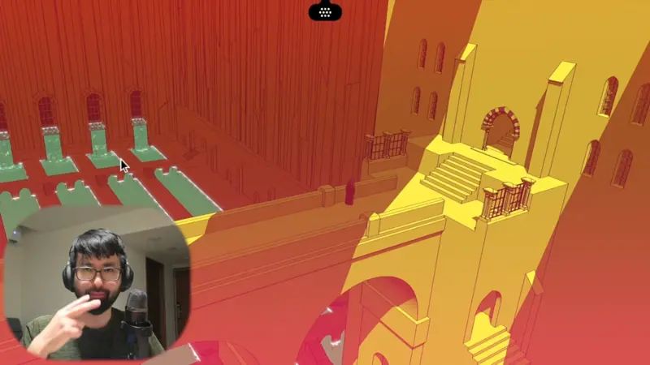

に
| Polite | ～です・～ます at the end of the sentence |
|---|---|
| Casual | no です or ます だ, the dictionary form, or nothing |
This grammar has no polite or casual version: it looks the same either way. Only the end of the sentence sets the politeness.

YouTube · video
私の友達は滋賀県に住んでいます。
"My friend lives in Shiga."
に marks a point: the place you end up, the place something is, or the time something happens. It goes right after that place or time: 滋賀県 + に + 住む.
On this card, he's telling us where his friend lives. 住む ("live") is about where you are, like いる, so it takes に. It answers "Lives where?": in Shiga.
Same in polite and casual speech. Moving to a place (行く, 来る, 帰る, 着く) takes に, and so does just being there (いる, ある). Doing an action there takes で instead.
Examples
A friend asks about your plans for Saturday.
鎌倉に行く。
"I'm going to Kamakura."
Where are you headed? Kamakura, so に.
CasualYour partner can't find the keys.
鍵は机の上にあるよ。
"The keys are on the desk."
Nothing is happening, the keys are just there. ある and いる take に.
CasualSetting up a call with a coworker.
3時に電話します。
"I'll call at 3."
A clock time is a point too, so it gets に. Words like 今日 or 明日 don't take it: 明日電話します.
PoliteWith and without
公園で遊ぶ。
"I play in the park." There's an action (遊ぶ), so the place gets で.
公園にいる。
"I'm in the park." No action, you just are there. Same with 公園に行く, "I'm going to the park".
Sentence mining

YouTube · video
早速、部室にお邪魔しました！
"I went straight to visit the club room!"
に marks where she went in. お邪魔する is the polite way to say you visit someone's space.

PiroPito First Playthrough of Minecraft #06
もうちょっと広々としたところに行きたいなー。
"I want to go somewhere a bit more open."
行く takes に for where you're headed: a roomier place.

1 Litre of Tears · Episode 1
男と自転車に二人乗り？
"[Dad, shocked:] Riding double on a bike, with a guy?"
乗る ("get on, ride") takes に for the thing you climb onto: the bike.

Shirokuma Cafe · Season 1, Episode 14
パンダ君に目隠しはダメだね
"A blindfold won't work on Panda."
に marks who it's done to: on Panda, for Panda.

YouTube · video
ホテルに帰って、妻と交代します。
"I'll head back to the hotel and swap with my wife."
帰る takes に for where you go back to.

I am Mita, Your Housekeeper · Episode 1
希衣と川に行ったら
"When she went to the river with Kii..."
Place + に + 行く.

Source unknown No source
下の方には水路が見えます。
"Down below, I can see a canal."
に marks where: down there. は on top makes that place the topic, so には = "as for down there".

Shirokuma Cafe · Episode 7
海に行きます！
"We're going to the sea!"
に marks where you're going.
Reference
A Dictionary of Basic Japanese Grammar
Entries "ni¹" to "ni⁷" · pp. 289–303